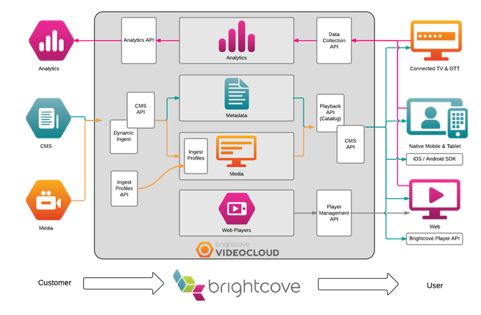

Video Cloud API Overview
This topic provides a general guide to the current Brightcove APIs and how they work together. Note that most of the functionality available through the APIs is also available through Studio. The APIs allow you to access this functionality programmatically for apps or integration with other systems.
Note: the current APIs are covered here. Video Cloud also supports several legacy APIs such as the Media API, but use of the current APIs are recommended.

Analytics API
The Analytics API allows you to obtain analytics data for your Video Cloud accounts. Use it to see how your content is performing, identify most popular or poorly performing content, and to measure engagement over the duration of videos.
Typical uses:
- Generate specialized reports not available through the Analytics module in Studio
- Integration with your CMS
Brightcove Player API
The Brightcove Player API is a client-side JavaScript API that allows you to interact with the Brightcove Player to add functionality. There are several ready-made plugins that use the API to create overlays, integrate advertising, create custom endscreens, and more.
Typical uses: add functionality to the player such as advertising, CTAs, and chaptering.
CMS API
The CMS API provides uncached access to video and playlist data. It allows you to manage videos, playlists, and folders.
Typical uses: integrate Video Cloud with your CMS.
Dynamic Ingest API
The Dynamic Ingest API allows you to add, replace, and retranscode videos, and also to add video assets, including poster and thumbnail images, or webVTT files for captions or chapters.
Typical uses:
- Integration with your CMS
- Create apps to migrate videos from another source to Video Cloud
- Create apps to ingest or retranscode multiple videos
Ingest Profiles API
The Ingest Profiles API allows you to manage ingest profiles for your account. Ingest Profiles define what renditions are created when you add or retranscode videos, poster and thumbnail images to be captured during transcoding, and also specify DRM packaging and whether a master is archived.
Typical uses: create custom ingest profiles for DRM packaging or specialized renditions.
Mobile SDKs
The Mobile SDKs allow you to integrate Video Cloud with your iOS and Android apps to include videos and playlists.
Typical uses: build video-enabled apps for iOS and Android.
OAuth API
The OAuth API is used to generate client credentials for a set of API operations for the other RESTful APIs. The client credentials are then used to create access tokens to authenticate API requests.
Typical uses: generate client credentials for APIs not available in Studio Admin section
Playback API
The Playback API allows you to access video and playlist data from clients. It is not a media management api - for that, use the CMS API. Instead, the Playback API is used to access video/playlist data from mobile apps or from web pages for such purposes as creating a video catalog. Note that the Playback API is built into the Brightcove Player, so you do not need to access the API directly to fetch content for the player - instead, you can use the Player Catalog.
Typical uses:
- Retrieve videos and playlists for mobile applications
- Retrieve video and playlist data for video portals
Policy API
The Policy API is used to generate policy keys that are used to access the Playback API. Policy keys are automatically generated for all Brightcove Players, so you do not need to use this API unless you accessing the Playback API directly.
Typical uses:
- Get access to the Playback API for mobile apps
- Get access to the Playback API for video portals
Player Management API
The Player Management API is used to create and manage Brightcove Players. It allows you to create, update, and delete players, and also to publish players so that they are available for web pages.
Typical uses: Integration with your CMS.